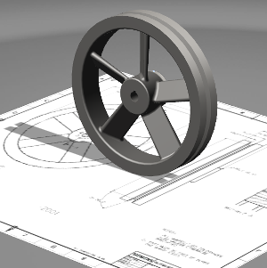
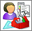
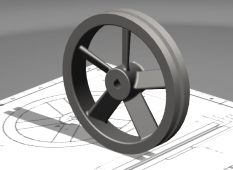
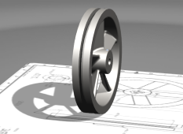
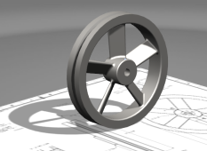

打开并查看部件
|
注释 |
您必须使用具有完整菜单的高级功能角色以及拥有高级艺术外观显示的使用权才能完成这个练习。 |
-
打开 des09_av_flywheel。

-
点击资源条上的角色
 选项卡。
选项卡。 -
在系统默认文件夹夹中，选择具有完整菜单的高级功能 。
-
如果出现加载角色信息，请阅读，然后选中不要再显示此消息复选框
 ，并点击确定。
，并点击确定。无论何时，当您更改角色时，都会提示您可能丢失定制的用户界面。
-
选择视图→可视化→真实艺术外观任务。
-
如果显示高级艺术外观显示信息，请阅读，然后选中不要再显示此消息复选框
，并点击确定。 -
旋转显示，并注意实时阴影的影响。



因为您看到了一个阴影在更新，可以认为这是模型中打开的一个现有光源。
-
点击部件导航器，展开摄像机并双击 start，以返回初始视角。